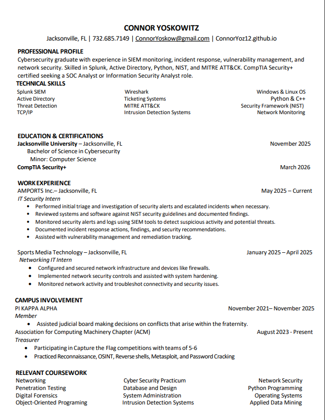

Recent Graduate | Aspiring Cybersecurity Analyst
Hello! I'm Connor Yoskowitz, a recent graduate with a Bachelor of Science in Cybersecurity and a minor in Computer Science from Jacksonville University. I'm a cybersecurity graduate with experience in SIEM monitoring, incident response, vulnerability management, and network security. Skilled in Splunk, Active Directory, Python, NIST, and MITRE ATT&CK. CompTIA Security+ certified, seeking a SOC Analyst or Information Security Analyst role.
Click any project card to open the full lab page.
Built an ELK + Wazuh SIEM home lab monitoring multiple Windows and Linux endpoints. Created dashboards tracking failed logins, brute force attempts, and suspicious processes.
Used Wireshark, Nmap, and Snort to analyze malicious traffic including port scans, phishing callbacks, and simulated C2 traffic.
Deployed a Windows AD domain with multiple users, GPO policies, endpoint monitoring, and security hardening.
SIEM & Monitoring: Splunk, ELK Stack, SIEM, Threat Detection, Intrusion Detection Systems
Networking & OS: TCP/IP, Network Monitoring, Windows & Linux OS
Tools: Wireshark, Nmap, Snort, Metasploit, Nessus, Burp Suite, Ticketing Systems
Frameworks: MITRE ATT&CK, NIST Security Framework, Active Directory
Programming: Python, C++
Soft Skills: Communication, Analytical Thinking, Documentation, Learning Agility
May 2025 – Present | Jacksonville, FL
January 2025 – April 2025 | Jacksonville, FL
Graduated November 2025 | Jacksonville, FL
Member | November 2021 – November 2025
Treasurer | August 2023 – Present

📧 Email: ConnorYoskow@gmail.com
💼 LinkedIn: linkedin.com/in/connor-yoskowitz